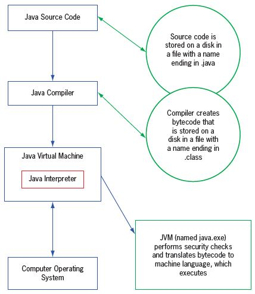
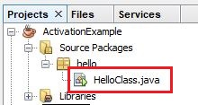
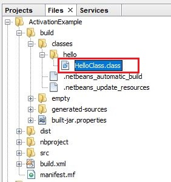
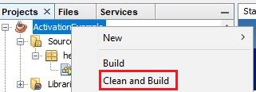
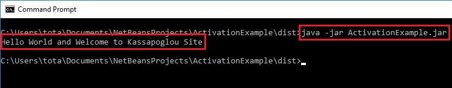

Στο σημερινό δωρεάν μάθημα Java, θα δούμε τα βήματα που
ακολουθεί η Java για να δημιουργήσει ένα εκτελέσιμο αρχείο
jar από τον αρχικό μας κώδικα. Έχουμε αρκετά θέματα να
αναλύσουμε οπότε ας ξεκινήσουμε.
Στην πρώτη ενότητα είχαμε εγκαταστήσει την πιο
τελευταία έκδοση της Java εκτελώντας ένα αρχείο
με το όνομα JDK. Η εγκατάσταση του JDK είχε δύο κύριους σκοπούς:
- πρώτον να δημιουργηθεί ένα Java Virtual Machine στον υπολογιστή μας
- και δεύτερον έχουμε την δυνατότητα να δημιουργούμε, να κάνουμε
compile και τέλος να τρέχουμε τα προγράμματα μας.
Η ερώτηση όμως παραμένει – τι είναι το JVM? Θα έχετε ακούσει
φαντάζομαι τον λόγο που η Java έγινε διάσημη ανάμεσα στους
προγραμματιστές – Γιατί κάθε εφαρμογή έχει
την δυνατότητα να τρέξει σε όλα τα λειτουργικά συστήματα με
σχεδόν καμία αλλαγή στον κώδικα. Πως όμως είναι αυτό εφικτό?
Όταν εγκαταστήσαμε το JDK εγκαταστάθηκε στον υπολογιστή μας
ένα Java Virtual Machine ή αλλιώς JVM. Κάθε Java εφαρμογή
που χτίζουμε και εκτελούμε τρέχει επάνω σε αυτό το JVM χωρίς
ποτέ να “βλέπει” το πραγματικό λειτουργικό σύστημα. Με πολύ
απλά λόγια, το JVM είναι η CPU, η μνήμη και το λειτουργικό
σύστημα που νομίζει ότι βλέπει η Java εφαρμογή. Αν τώρα από
Windows, για παράδειγμα, θέλετε να τρέξετε την εφαρμογή σας
σε ένα Linux υπολογιστή, δεν έχετε παρά να εγκαταστήσετε το
JDK για Linux και είσαστε έτοιμοι. Η Java εφαρμογή θα ψάξει
και θα βρει πάλι το JVM που χρειάζεται για να εκτελεστεί
χωρίς να αντιληφθεί ότι το λειτουργικό σύστημα έχει αλλάξει.
Μπορούμε να δούμε όλη αυτή την λειτουργία με περισσότερη λεπτομέρεια.
Θα χρειαστούμε όμως την βοήθεια της πιο κάτω εικόνας:

Στην προηγούμενη ενότητα δημιουργήσαμε ένα απλό Hello
World Java πρόγραμμα. Η κλάση μας μέσα στην οποία
είναι γραμμένος ο κώδικας μας έχει κατάληξη .java.
Όλα τα αρχεία java κώδικα από τα οποία αποτελείται
μια εφαρμογή έχουν κατάληξη .java. Αυτό ονομάζεται
Java Source Code και είναι το πρώτο βήμα.

Όταν κάναμε δεξί κλικ επάνω στο project και επιλέξαμε
Run, στην πραγματικότητα αυτό που έγινε ήταν το JDK να
ελέγξει αν συντακτικά ο κώδικας μας ήταν εντάξει.
Αν ήταν τότε έκανε compile την κλάση μας και δημιούργησε
ένα καινούργιο αρχείο με το ίδιο όνομα αλλά με κατάληξη .class.
Αν είχαμε μια εφαρμογή π.χ με τρεις κλάσεις τότε θα είχαμε
την δημιουργία τριών καινούργιων αρχείων με κατάληξη .class.

Τα καινούργια αυτά αρχεία περιέχουν των κώδικα μας
σε ψηφιακή μορφή bytecode. Από εδώ και πέρα αναλαμβάνει
το JVM το οποίο έχει την ικανότητα να διαβάσει αυτά τα
αρχεία και να τα μετατρέψει σε γλώσσα μηχανής του αντίστοιχου
λειτουργικού σύστημα στο οποίο τρέχει.
Δεν είναι απαραίτητο να τρέχουμε την εφαρμογή μας για
να δημιουργηθούν τα .class αρχεία. Αυτά μπορούν
επίσης να δημιουργηθούν από μια διαδικασία που
λέγεται build. Αν κάνετε δεξί κλικ επάνω στο project,
θα δείτε μια επιλογή build ή ακόμα καλύτερα clean and build.
Προτιμώ το clean and build γιατί κάθε φορά που αλλάζει
κάτι στον κώδικα και το τρέξουμε, καθαρίζει τα παλιά .class
αρχεία και δημιουργεί καινούργια αφού επαναλαμβάνει την
διαδικασία του compilation.

Αν τρέξετε το clean and build θα δείτε ότι εκτός από .class
αρχεία, δημιουργεί και ένα καινούργιο αρχείο το οποίο έχει
κατάληξη .jar και περιέχει όλες της κλάσης της εφαρμογής μας.

Αυτή είναι όλη η εφαρμογή μας πακεταρισμένη κάτω από
ένα όνομα, με όλες τις κλάσεις που χρειάζεται να τρέξει
η εφαρμογή μας. Αν και είναι κάπως άστοχο το παράδειγμα,
απλά για να σας δώσω να καταλάβετε τι έχουμε δημιουργήσει,
σκεφτείτε το σαν κάτι αντίστοιχο ενός .exe αρχείου στα
Windows. Δηλαδή τώρα έχουμε μια εκτελέσιμη εφαρμογή?
Και αν ναι, αν εγκαταστήσουμε αυτό το .jar αρχείο σε
έναν άλλο υπολογιστή στο οποίο ήδη έχουμε εγκαταστήσει
το JDK, πως μπορούμε να το εκτελέσουμε? Η απάντηση είναι
πολύ απλή: java -jar (και το όνομα του αρχείου).

Πριν κλείσουμε αυτή την δωρεάν Java ενότητα ας κάνουμε μια
γρήγορη ανακεφαλαίωση στο τι έχουμε πει. Κάθε φορά
λοιπόν που κάνετε Clean and Build ένα αρχείο, στην
ουσία δημιουργείται ένα .jar αρχείο, το οποίο αντιπροσωπεύει
την εκτελέσιμη έκδοση της εφαρμογής. Μέσα σε αυτό το .jar
αρχείο (μπορείτε να το κάνετε unzip και να δείτε τι περιέχει)
περιλαμβάνονται όλες οι κλάσεις της εφαρμογής μας σε bytecode
μορφή και κατάληξη .class. Αυτά τα bytecode αρχεία τα διαβάζει
ο Java Interpreter (το JVM με άλλα λόγια) και τα μετατρέπει
σε γλώσσα μηχανής του λειτουργικού σύστημα επάνω στο οποίο
τρέχει η εφαρμογή μας.